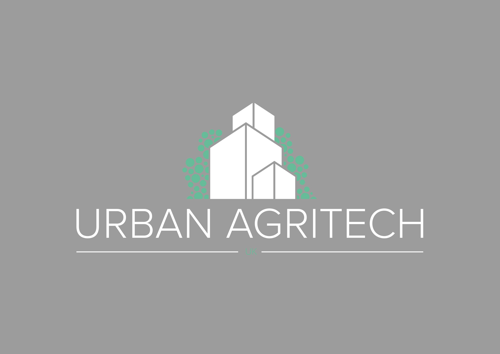
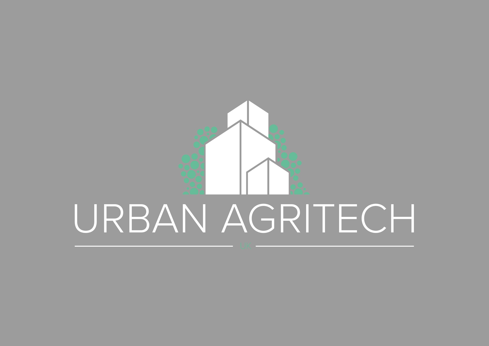
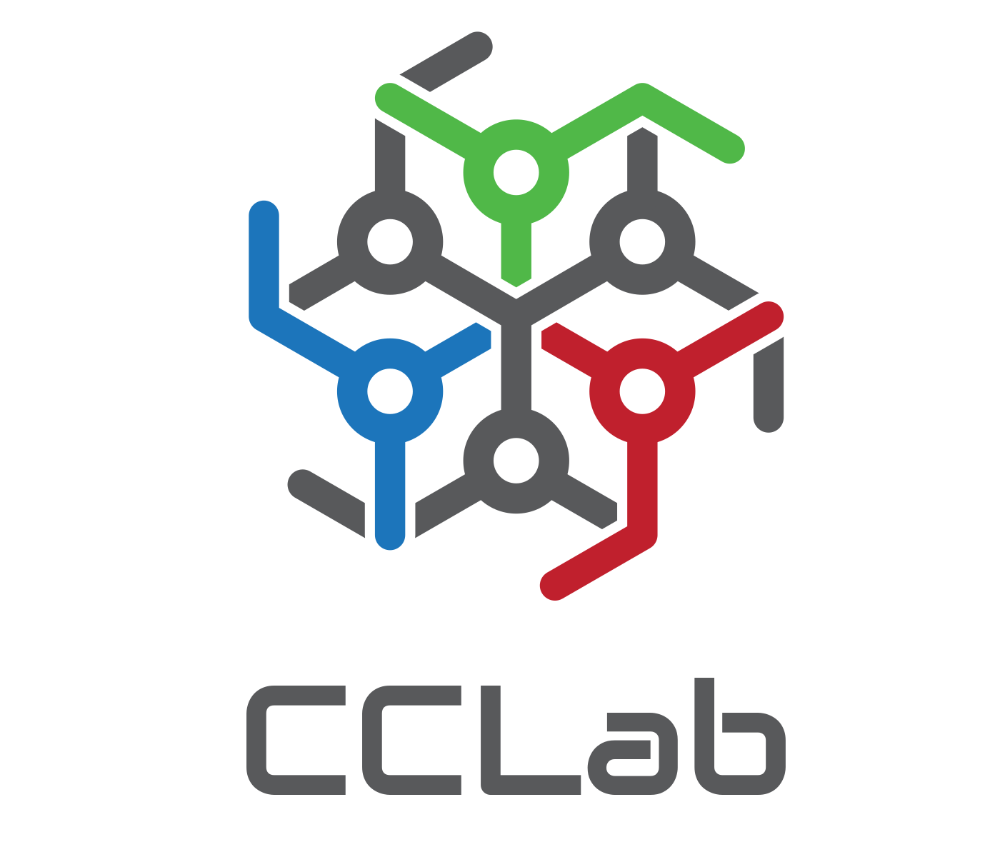
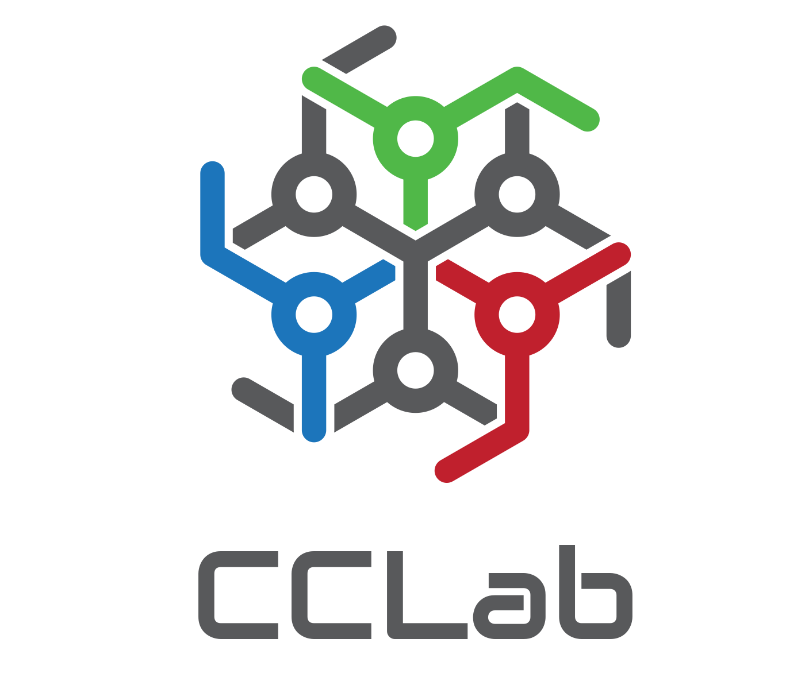
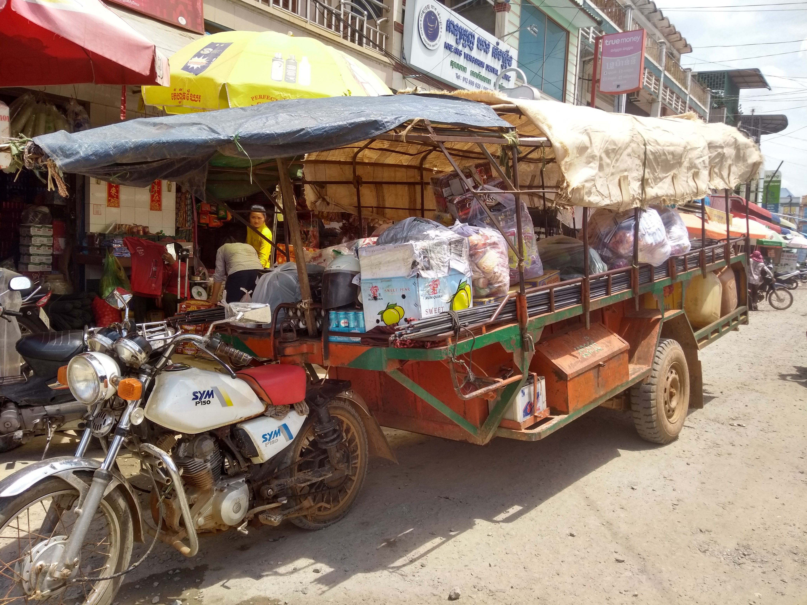
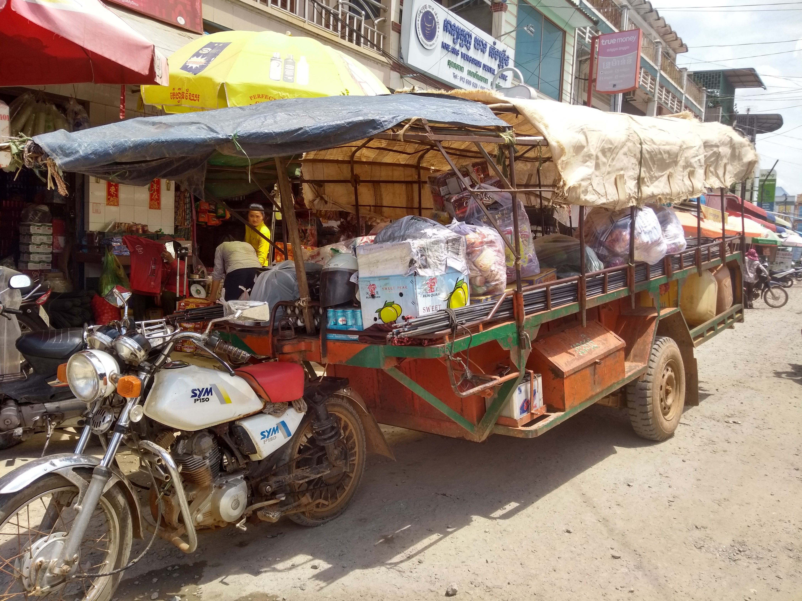

Agricultural Technology
Are Changes Coming
Created by Michael Ratcliffe for the University Center of Nove Hrady
Hello There
About me: Acreddited Engineer and Farmer from Manchester United Kingdom..... Many Hats Depending On the Day
 


 

AquaponicsLab
Working in the urban agriculture sector
Small Core team with hired in Experties when needed
Automation
Education
Consultancy, system managment, PR, value adding etc
Working with Practionors, NGO's, GO's, Universities.
Nuffield Farming Trust
Moto: "Leading positive change in agriculture"
How It Started
William Morris – Lord Nuffield

Britain's greatest philanthropist
Started at the bottom made it to the top, making his Fortune In the Automobile Industry.
Where it is today
To date 854 Scholars from the UK and some 1666 Scholars worldwide since 1945
Started in England now has: Australia, Netherlands, Brazil,France, Canada and an international
In Short: Providing financing, connections and training to agricultural key players
Visit any country [As many as possible], to speak to practionors, policyy makers, NGO's, GO, Academics
How it works
Find someone who is a leader in their sector of agriculture or agriculture related industry.
The programme has five parts:
-Pre training [How to squeeze Diplomats/Politicians]
-CSC Conference
-GFP Tour
-Personal Study
-Share it with your industry
2017 Conference
100 Farmers one conference: Brazil

Collectivly 8 million Hectors [80,000 Km2]
funny feeling, I ussualy measure my farms in square meters
GFP
10 People Teams, 2 months Travel
Brazil,USA, Czech Republic, Poland,Ukraine,Kenya, South Africa
GFP People


Personal Study
Study Topic: Agricultural Technology
20+ Countries
4 weeks at Home
Wide range of people
Why Nove Hrady
Vision Based Automation is going to change agriculture like no other
Antonín Bárta
Dr Jan Urban
Academic solutions that are adopted by industry... I really needed to see that in person
Technology
During the past two years I have seen:
High Tech
Low Tech
No Tech

 

Political Drivers
Like it or now Policy effects technology development and adoption
South Africa:
If it is just to replace a person.... Forget about it
It needs to do something better
Farmers
Large Farmers have acess to technology and services, they are waiting for the next big inovations
Smaller farmers do not have acess to smart tech, just the basics.
I belive there is a gap to fill in the farming sector supplying easy to use technology
The problems in farming are felt at a global level
Academia
Academia is very useful, but it is a slow process, often working on low TRL solutions
They have the skills and resources to polish simpler solutions to todays problems
But to achieve this we need to foster closer academic industrial relationships
Closing the Gap
Know your customer and his needs:
Simple to use
Reduce Time demands and make $$$
Example: Embrapa
Problems Present Opertunities
Lack of Skills....
Food pickiness.... Use tech to add value
Brexit.... Policy that Works for better tech
tech That is going to Change Agriculture
Automation that beats humans
Personalised food at DNA Level
Linking the consumer and producer
As technolgy advances we will look back in shock
Recomended daily intakes
Personalised food at DNA Level
Linking the consumer and producer
THE END
-Its been a great 2 year Journey